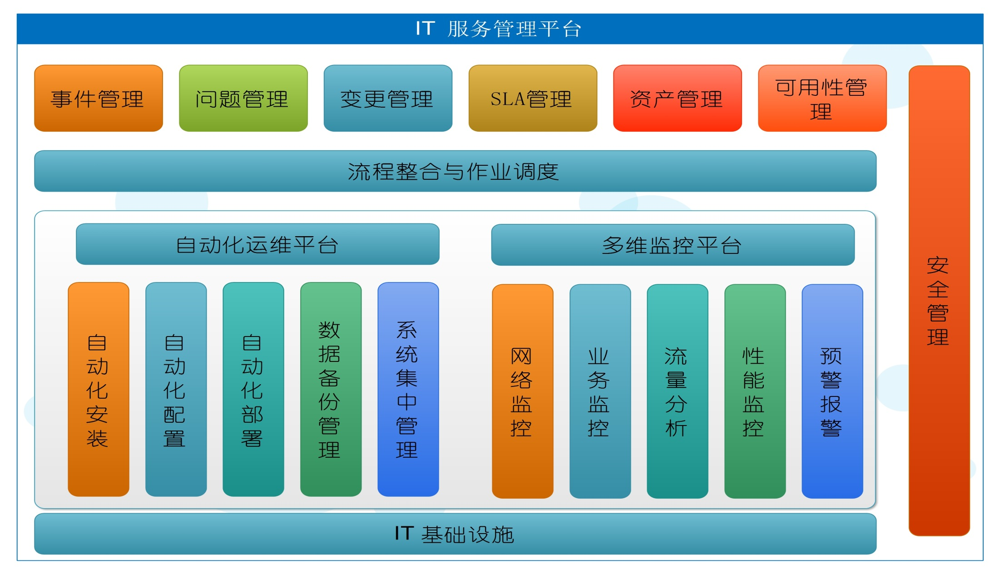

随着信息时代的持续发展，IT运维已经成为IT服务内涵中重要的组成部分。面对越来越复杂的业务，面对越来越多样化的用户需求，不断扩展的IT应用需要越来越合理的模式来保障IT服务能灵活便捷、安全稳定地持续保障，这种模式中的保障因素就是IT运维（其他因素是更加优越的IT架构等）。从初期的几台服务器发展到庞大的数据中心，单靠人工已经无法满足在技术、业务、管理等方面的要求，那么标准化、自动化、架构优化、过程优化等降低IT服务成本的因素越来越被人们所重视。其中，自动化最开始作为代替人工操作为出发点的诉求被广泛研究和应用。
IT运维从诞生发展至今，自动化作为其重要属性之一已经不仅仅只是代替人工操作，更重要的是深层探知和全局分析，关注的是在当前条件下如何实现性能与服务最优化，同时保障投资收益最大化。自动化对IT运维的影响，已经不仅仅是人与设备之间的关系，已经发展到了面向客户服务驱动IT运维决策的层面，IT运维团队的构成，也从各级技术人员占大多数发展到业务人员甚至用户占大多数的局面。
因此，IT运维自动化是一组将静态的设备结构转化为根据IT服务需求动态弹性响应的策略，目的就是实现IT运维的质量，降低成本。可以说自动化一定是IT运维最高层面的重要属性之一，但不是全部。
222
333
444
555
666